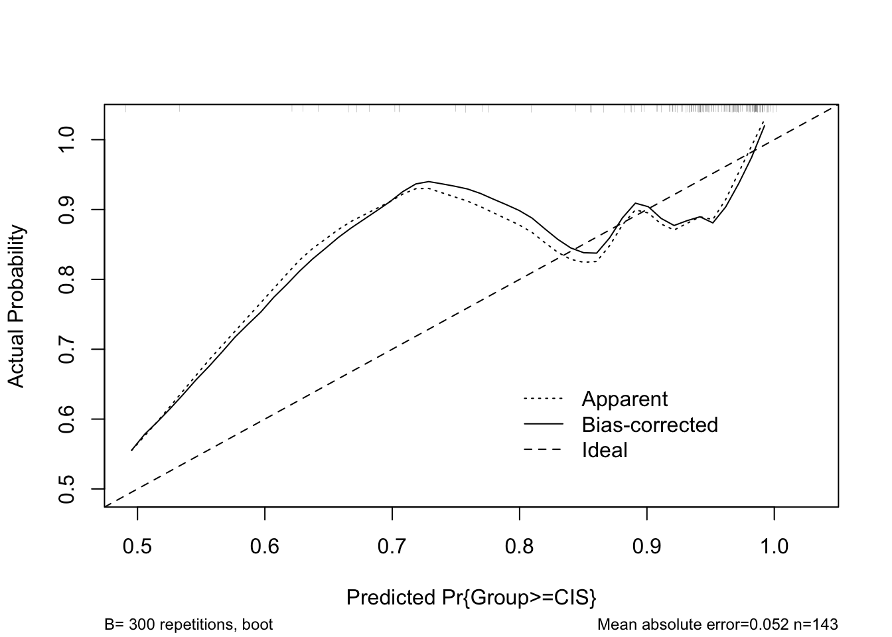
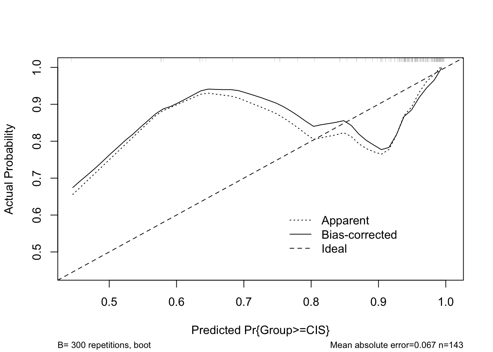

Modeling & Assessing Lipid Added Value
1 Scope
Using Multiple Sclerosis severity data, analysis and identification of potential lipid biomarkers after adjustment for clinical information. Majority of lipids are unknown. Development of a clinical prediction model.
2 Information on batch quality
For the data collection site AUTH, batch1 lipid concentration data have been processed with lower expected quality than batch2 data.
3 Base Clinical Data & Model
In order to account for the different batch quality data from the AUTH collection site, the performance of two models is compared:
The models considered are of ordinal regression type in order to properly account for disease severity in the outcome.
- A model with all data
- A model excluding the AUTH batch1 cases, which are suspected to have lower lipid concentration quality
The AUTH_batch1 cases are expected to contain errors in data processing i.e. lipid related samples were frozen and refrozen again which lead to loss of quality in the measurements. Then a second batch was decided to be generated from a different group of individuals i.e. AUTH_batch2
The model with the best out of sample performance as measured by the Somers Dxy index is then chosen as the base model, and to be used in further analysis.
For both models 1 and 2, a variable backward elimination procedure was performed, and in both models it resulted with the selection of two variables based on their importance: Age and Albumin_CSF. After accounting for variable selection and sampling variation, the Somers Dxy index was 24% and 33% respectively for the two models. These correspond to C rank discrimination indeces of 62.07% and 66.52% respectively.
Hence model 2 was selected as the base model, having a C rank discrimination index of 66.52%.
Besides model performance, there are two more reasons for model 2 selection: 1) The severity groups are more balanced i.e. the AUTH_batch1 that’s removed contains only 2 Controls with most cases being of MS type. 2) Since the data processing that led to the AUTH_batch1 contained errors, it is not expected to be repeated again, and hence future potential cases from the AUTH site will always follow the AUTH_batch1 procedure for data generation.
Below, probability calibration plot as well as estimated effect plots are shown.
Data Summaries
After multiple imputation, removal of the AUTH_batch1 cases and variable selection, the updated data descriptions are shown below.
baseModelData Descriptives
2 Continous Variables of 3 Variables, 143 Observations
Variable
Label
Units
n
Missing
Distinct
Info
Mean
pMedian
Gini |Δ|
Quantiles
.05 .10 .25 .50 .75 .90 .95
Age
143
0
44
0.999
35.08
34.5
12.29
20.0 23.0 27.0 32.0 42.0 50.0 54.9 Albumin_CSF
The level of CSF albumin is used as a reference to indicate increased permeability of the blood capillaries. CSF IgG is frequently elevated in multiple sclerosis, but normal levels do not rule out multiple sclerosis. Reference is 5-34 mg/dL
mg/dL
143
0
128
1.000
34.32
33.73
13.76
17.13 18.54 25.15 34.00 41.20 48.94 56.53
baseModelData Descriptives
1 Categorical Variables of 3 Variables, 143 Observations
Variable
Label
n
Missing
Distinct
Group
MS Disease Severity
143
0
3
Calibration
Partial Dependence Plots
Age while being adjusted at Albumin_CSF = 20. The shadows denote 90% and 10% quantiles of the confidence interval i.e. the central 80%. A light blue dashed line at the 50% likelihood marks the transition to higher risk territory. Overestimation of the risk can be observed at younger ages due to the low sample size of the Control group.Age while being adjusted at Albumin_CSF = 20. The shadows denote 90% and 10% quantiles of the confidence interval i.e. the central 80%. A light blue dashed line at the 50% likelihood marks the transition to higher risk territory.Albumin_CSF while being adjusted at Age = 32. The shadows denote 90% and 10% quantiles of the confidence interval i.e. the central 80%. A light blue dashed line at the 50% likelihood marks the transition to higher risk territory.Albumin_CSF while being adjusted at Age = 32. The shadows denote 90% and 10% quantiles of the confidence interval i.e. the central 80%. A light blue dashed line at the 50% likelihood marks the transition to higher risk territory.4 Added Value From Lipids
Below two procedures are shown for assessing lipid added value to the predictive performance of a model after adjusting for the clinical information of the Age & Albumin_CSF variables.
The two main methods used to identify the biomarker candidate(s) are based on the likelihood ratio and on network graph estimation.
Each procedure aims to expand on the selected cases i.e. lipid(s) from the previous one.
Model Likelihood Ratio Statistic (LR)
Initially, using the original data as above, each lipid is added separately in a model that includes Age & Albumin_CSF as predictors, and the model’s LR statistic is extracted. Then the lipids are ranked so that top ranks correspond to the highest LR values. Below is a histogram showing the distribution of the LR statistics.
------------------------------------------------------------------------------
6 d.f. Chi-squares
length n NAs unique 0s mean meanCI'
1'313 1'313 0 = n 0 19.11619 18.96292
100.0% 0.0% 0.0% 19.26946
.05 .10 .25 median .75 .90 .95
16.72759 16.85558 17.27098 18.21955 19.94592 22.46632 24.55423
range sd vcoef mad IQR skew kurt
28.87480 2.83101 0.14810 1.68895 2.67494 2.81219 13.68888
lowest : 16.52865, 16.53301, 16.53313, 16.53876, 16.53921
highest: 32.08181, 33.18942, 39.96127, 42.48836, 45.40346
' 95%-CI (classic)MS disease severity outcome. Three lipids can be seen to have a higher than 40 LR value. The blue curve denotes the cumulative distribution function cdf of the Chi-Square LR statistics.
The top 3 lipids are indicated below with the ranking based on having a cdf value of at least 99% and an FDR adjusted p-value of less than 5%:
| codeName | lipName | chisq | df | pooledFDRpval | cdf | rank | RT | M_Z | lipActual |
|---|---|---|---|---|---|---|---|---|---|
| lip1172 | 682.59229 Da 673.09 s | 45.40346 | 6 | 0.0007 | 1.0000000 | 1 | NA | NA | NA |
| lip156 | 727.65058 Da 672.95 s | 42.48836 | 6 | 0.0030 | 0.9992384 | 2 | NA | NA | NA |
| lip1012 | 812.67373 Da 513.47 s | 39.96127 | 6 | 0.0107 | 0.9984768 | 3 | 8.56 | 813.681 | SM_42:2_ |
These lipids have been found to be significant after clinical metadata adjustment i.e. Age and Albumin_CSF and with an FDR p-value adjustment. Currently, only the lipid with code name lip1012 has been identified as SM_42:2_. Below, three models have been built upon the base one and utilizing the above lipids in different ways:
- A penalized ordinal regression model that includes nonlinear and interaction terms amongst all variables
Age,Albumin_CSF,lip1172,lip156andlip1012, with 8.8 degrees of freedom and with a backward elimination procedure applied to it. The final resulting model included only the variablesAge,Albumin_CSF,lip1172andlip1012. - A penalized ordinal regression model that includes all variables
Age,Albumin_CSF,lip1172,lip156andlip1012in a nonlinear form and with 7.5 degrees of freedom. - An ordinal regression model that includes
Age,Albumin_CSF, andlip1012all in a nonlinear form and with 6 degrees of freedom.
Below a table of performance metrics as well as calibration plots are shown for all of these models.
| model_id | df | C_index | variation_type | model_type | variables |
|---|---|---|---|---|---|
| 1 | 8.8 | 0.78 | sampling & 46 terms | penalized | 4 |
| 2 | 7.5 | 0.81 | sampling | penalized | 5 |
| 3 | 6.0 | 0.76 | sampling & 6 terms | unpenalized | 3 |
Calibration

Model 1: Actual versus predicted probabilities for the reduced model having Age, Albumin_CSF, lip1172 and SM_42:2_ aka lip1012 as predictors in nonlinear form. The x-axis indicates the risk event probability. The model appears well calibrated. For predicting CIS or MS from the Control stage, there is underestimation at the 0.5-0.8 range.
Model 1: Actual versus predicted probabilities for the reduced model having Age, Albumin_CSF, lip1172 and SM_42:2_ aka lip1012 as predictors in nonlinear form. The x-axis indicates the risk event probability. The model appears well calibrated. For predicting MS (when at Control or CIS stage), there is some overestimation for predictions less than 0.6.

Model 2: Actual versus predicted probabilities for the reduced model having Age, Albumin_CSF, lip1172, lip156 and SM_42:2_ aka lip1012 as predictors in nonlinear form. The x-axis indicates the risk event probability. The model appears well calibrated. For predicting CIS or MS from the Control stage, there is underestimation at the 0.45-0.8 range.
Model 2: Actual versus predicted probabilities for the reduced model having Age, Albumin_CSF, lip1172, lip156 and SM_42:2_ aka lip1012 as predictors in nonlinear form. The x-axis indicates the risk event probability. The model appears well calibrated. For predicting MS (when at Control or CIS stage), there is some overestimation for predictions less than 0.6.
Model 3: Actual versus predicted probabilities for the reduced model having Age, Albumin_CSF and SM_42:2_ aka lip1012 as predictors in nonlinear form. The x-axis indicates the risk event probability. The model appears well calibrated. For predicting CIS or MS from the Control stage, there is underestimation for predictions lower than 0.75.
Model 3: Actual versus predicted probabilities for the reduced model having Age, Albumin_CSF and SM_42:2_ aka lip1012 as predictors in nonlinear form. The x-axis indicates the risk event probability. The model appears well calibrated. For predicting MS (when at Control or CIS stage), there is good performance.
To note, model 1 is also taking into account that lipids lip1172 and lip156 have a Pearson correlation of ~93%, and from two lipids it has selected lip1172. However, since backward elimination does not perform well in the presence of collinearity, model 1 feature selection should be considered with a grain of salt.
Model 3 has the best calibration and mean absolute error mae performance even though its C-index is not the highest among the three models. It only spends though 6 degrees of freedom df and achieves a C-index not far from the other two models, having therefore a good balance between parsimony and predictive power. Being the less complex model is also desirable since more room is left for potential new lipids to be added to the model from the results of a correlation network analysis.
A couple of interesting observations for this study are: 1) Identification of significant lipids after adjustment for clinical information can detect lipids that are in addition correlated to each other, and 2) In the pool of significant lipids that have been obtained, the most significant lipid as per its chisq statistic or FDR adjusted p-value i.e. here lip1172, does not necessarily give the best model when compared to models involving the less significant lipids i.e. here SM_42:2_ aka lip1012.
Partial Dependence Plots
SM_42:2_
Model 2: Risk of condition severity: When in Control status, the probability of having either CIS or MS status. Dependence on SM_42:2_ (aka lip1012) while being adjusted at values of the other 4 variables as per Adjusted to: caption. The shadows denote 90% and 10% quantiles of the confidence interval i.e. the central 80%. A light blue dashed line at the 50% likelihood marks the transition to higher risk territory.Model 2: Risk of having MS when either in Control or CIS state. Dependence on SM_42:2_ (aka lip1012) while being adjusted at values of the other 4 variables as per Adjusted to: caption. The shadows denote 90% and 10% quantiles of the confidence interval i.e. the central 80%. A light blue dashed line at the 50% likelihood marks the transition to higher risk territory.Model 3: Risk of condition severity: When in Control status, the probability of having either CIS or MS status. Dependence on SM_42:2_ (aka lip1012) while being adjusted at values of the other 2 variables as per Adjusted to: caption. The shadows denote 90% and 10% quantiles of the confidence interval i.e. the central 80%. A light blue dashed line at the 50% likelihood marks the transition to higher risk territory.Model 3: Risk of having MS when either in Control or CIS state. Dependence on SM_42:2_ (aka lip1012) while being adjusted at values of the other 2 variables as per Adjusted to: caption. The shadows denote 90% and 10% quantiles of the confidence interval i.e. the central 80%. A light blue dashed line at the 50% likelihood marks the transition to higher risk territory.lip1172
Model 2: Risk of condition severity: When in Control status, the probability of having either CIS or MS status. Dependence on lip1172 while being adjusted at values of the other 4 variables as per Adjusted to: caption. The shadows denote 90% and 10% quantiles of the confidence interval i.e. the central 80%. A light blue dashed line at the 50% likelihood marks the transition to higher risk territory.Model 2: Risk of having MS when either in Control or CIS state. Dependence on lip1172 while being adjusted at values of the other 4 variables as per Adjusted to: caption. The shadows denote 90% and 10% quantiles of the confidence interval i.e. the central 80%. A light blue dashed line at the 50% likelihood marks the transition to higher risk territory.Relative Explained Variation
SM_42:2_ aka lip1012 is seen to be the highest contributor in the model.
Variable Effects
Model 2
Effects Response: Group
|
|||||||
| Low | High | Δ | Effect | S.E. | Lower 0.95 | Upper 0.95 | |
|---|---|---|---|---|---|---|---|
| Age | 27.00 | 42.00 | 15.000 | -0.2325 | 0.2814 | -0.83310 | 0.303100 |
| Odds Ratio | 27.00 | 42.00 | 15.000 | 0.7926 | 0.43470 | 1.354000 | |
| Albumin_CSF | 25.15 | 41.20 | 16.060 | 0.4571 | 0.2745 | 0.01182 | 1.027000 |
| Odds Ratio | 25.15 | 41.20 | 16.060 | 1.5790 | 1.01200 | 2.793000 | |
| lip1172 | 9.44 | 10.21 | 0.770 | -0.3570 | 0.1989 | -0.62960 | 0.239400 |
| Odds Ratio | 9.44 | 10.21 | 0.770 | 0.6997 | 0.53280 | 1.270000 | |
| lip156 | 8.89 | 9.61 | 0.720 | -0.2034 | 0.1149 | -0.45360 | -0.003204 |
| Odds Ratio | 8.89 | 9.61 | 0.720 | 0.8160 | 0.63530 | 0.996800 | |
| lip1012 | 8.48 | 10.78 | 2.305 | 0.4120 | 0.2886 | -0.17040 | 0.960600 |
| Odds Ratio | 8.48 | 10.78 | 2.305 | 1.5100 | 0.84340 | 2.613000 | |
Model 3
Effects Response: Group
|
|||||||
| Low | High | Δ | Effect | S.E. | Lower 0.95 | Upper 0.95 | |
|---|---|---|---|---|---|---|---|
| Age | 27.00 | 42.00 | 15.000 | -0.2545 | 0.3685 | -1.0790 | 0.4265 |
| Odds Ratio | 27.00 | 42.00 | 15.000 | 0.7753 | 0.3399 | 1.5320 | |
| Albumin_CSF | 25.15 | 41.20 | 16.060 | 0.7113 | 0.3522 | 0.2065 | 1.5050 |
| Odds Ratio | 25.15 | 41.20 | 16.060 | 2.0370 | 1.2290 | 4.5060 | |
| lip1012 | 8.48 | 10.78 | 2.305 | 1.0350 | 0.4442 | 0.2205 | 1.9880 |
| Odds Ratio | 8.48 | 10.78 | 2.305 | 2.8150 | 1.2470 | 7.2980 | |
5 Binary Endpoint
Due to the low sample size of 15 for the Control group, here a similar analysis as above is implemented but considering only the groups CIS and MS.
The same 2 lipids as previously found are indicated below with the ranking based on having a cdf value of at least 99% and an FDR adjusted p-value of less than 5%:
| codeName | lipName | chisq | df | pooledFDRpval | cdf | rank |
|---|---|---|---|---|---|---|
| lip1172 | 682.59229 Da 673.09 s | 65.61935 | 7 | 0.0e+00 | 1.000000 | 1 |
| lip156 | 727.65058 Da 672.95 s | 59.04834 | 7 | 1.3e-06 | 0.999239 | 2 |
These lipids have been found to be significant after clinical metadata adjustment i.e. Age and Albumin_CSF and with an FDR p-value adjustment.
Lipid SM_42:2_ (aka lip1012) is not detected in this binary group split which indicates the risk of information loss by dichotomizing the outcome group.
The model including Age, Albumin_CSF and these two lipids has a C-Index of 0.83 and uses 5.5 degrees of freedom. Its calibration plot is shown below.

Model CIS vs MS: Actual versus predicted probabilities for the reduced model having Age, Albumin_CSF, lip1172 and lip156 as predictors in nonlinear form. The x-axis indicates the risk event probability. The model appears well calibrated. For predicting CIS or MS from the Control stage, there is underestimation at the 0.5-0.8 range.
6 Network Graph Estimates
Each network index lipid of each disease severity group is added separately in a model that includes Age & Albumin_CSF as predictors. Then the model’s LR statistic is extracted and the lipids are ranked so that top ranks correspond to the highest LR values. Below is a histogram showing the distribution of the LR statistics.
------------------------------------------------------------------------------
4 to 5 d.f. Chi-squares from lipid indices
length n NAs unique 0s mean meanCI'
1'313 1'313 0 = n 0 17.45100 17.25454
100.0% 0.0% 0.0% 17.64746
.05 .10 .25 median .75 .90 .95
13.64371 13.93282 14.76903 16.38910 19.23540 22.59943 24.82458
range sd vcoef mad IQR skew kurt
28.82723 3.62877 0.20794 2.92246 4.46637 1.54487 3.30925
lowest : 13.2265, 13.2291, 13.24771, 13.27234, 13.28601
highest: 31.85471, 31.98247, 34.95702, 35.14566, 42.05373
' 95%-CI (classic)MS disease severity outcome. Three lipids can be seen to have a higher than 35 LR value. The blue curve denotes the cumulative distribution function cdf of the Chi-Square LR statistics.
The top 3 lipids are indicated below with the ranking based on having a cdf value of at least 99% and an FDR adjusted p-value of less than 10%:
| codeName | lipName | chisq | lrmFail | coefNames | dfs | pooledFDRpval | cdf | rank | RT | M_Z | lipActual |
|---|---|---|---|---|---|---|---|---|---|---|---|
| lip1260 | 419.34802 Da 730.72 s | 42.05373 | FALSE | lipidNet_Control:lipidNet_CIS:lipidNet_MS | 5 | 0.0031 | 1.0000000 | 1 | NA | NA | NA |
| lip1058 | 620.53740 Da 532.41 s | 35.14566 | FALSE | lipidNet_Control:lipidNet_CIS:lipidNet_MS | 5 | 0.0874 | 0.9992384 | 2 | 8.87 | 638.5714 | DG_18:1_18:1_ |
| lip1171 | 826.70411 Da 664.95 s | 34.95702 | FALSE | lipidNet_Control:lipidNet_CIS:lipidNet_MS | 5 | 0.0956 | 0.9984768 | 3 | 11.08 | 844.7379 | TG_18:2_18:2_14:0_ |
Model 4
These three network correlation based lipids are added in nonlinear form into the previously built model 2 to form model 4. Model 4’s C_index is a considerable improvement as shown below in the updated performance metric table.
| model_id | df | C_index | variation_type | model_type | variables |
|---|---|---|---|---|---|
| 1 | 8.8 | 0.78 | sampling & 46 terms | penalized | 4 |
| 2 | 7.5 | 0.81 | sampling | penalized | 5 |
| 3 | 6.0 | 0.76 | sampling & 6 terms | unpenalized | 3 |
| 4 | 8.8 | 0.84 | sampling | penalized | 8 |
lip1172 and lip156, the rest of the variables are not correlated.
Relative Explained Variation

TG_18:2_18:2_14:0_ aka lip1171 is seen to be the highest contributor in the model but accompanied with high uncertainty in its contribution. Second best are lipids SM_42:2_ aka lip1012 and lip1260 with currently unknown identity.
Variable Effects
Effects Response: Group
|
|||||||
| Low | High | Δ | Effect | S.E. | Lower 0.95 | Upper 0.95 | |
|---|---|---|---|---|---|---|---|
| Age | 27.00 | 42.000 | 15.000 | -0.27050 | 0.21770 | -0.7026 | 0.15530 |
| Odds Ratio | 27.00 | 42.000 | 15.000 | 0.76300 | 0.4953 | 1.16800 | |
| Albumin_CSF | 25.15 | 41.200 | 16.060 | 0.41760 | 0.19950 | 0.0700 | 0.85060 |
| Odds Ratio | 25.15 | 41.200 | 16.060 | 1.51800 | 1.0730 | 2.34100 | |
| lip1172 | 9.44 | 10.210 | 0.770 | -0.28920 | 0.08223 | -0.4570 | -0.12790 |
| Odds Ratio | 9.44 | 10.210 | 0.770 | 0.74890 | 0.6332 | 0.87990 | |
| lip156 | 8.89 | 9.610 | 0.720 | -0.22320 | 0.06261 | -0.3559 | -0.09919 |
| Odds Ratio | 8.89 | 9.610 | 0.720 | 0.80000 | 0.7005 | 0.90560 | |
| lip1012 | 8.48 | 10.780 | 2.305 | 0.09353 | 0.18000 | -0.2807 | 0.43920 |
| Odds Ratio | 8.48 | 10.780 | 2.305 | 1.09800 | 0.7553 | 1.55100 | |
| lip1260 | 0.00 | 9.015 | 9.015 | -0.53390 | 0.31640 | -1.1190 | 0.03066 |
| Odds Ratio | 0.00 | 9.015 | 9.015 | 0.58630 | 0.3267 | 1.03100 | |
| lip1058 | 10.18 | 10.940 | 0.770 | 0.01940 | 0.13090 | -0.2413 | 0.26610 |
| Odds Ratio | 10.18 | 10.940 | 0.770 | 1.02000 | 0.7856 | 1.30500 | |
| lip1171 | 0.00 | 8.960 | 8.960 | -1.31700 | 0.33060 | -1.9430 | -0.62190 |
| Odds Ratio | 0.00 | 8.960 | 8.960 | 0.26790 | 0.1433 | 0.53690 | |
Partial Dependence Plots
Model 4: Risk of condition severity: When in Control status, the probability of having either CIS or MS status. Dependence on lip1260 (currently not identified) while being adjusted at values of the other 7 variables as per Adjusted to: caption. The shadows denote 90% and 10% quantiles of the confidence interval i.e. the central 80%. A light blue dashed line at the 50% likelihood marks the transition to higher risk territory.
Model 4: Risk of having MS when either in Control or CIS state. Dependence on lip1260 (currently not identified) while being adjusted at values of the other 7 variables as per Adjusted to: caption. The shadows denote 90% and 10% quantiles of the confidence interval i.e. the central 80%. A light blue dashed line at the 50% likelihood marks the transition to higher risk territory.Model 4: Risk of condition severity: When in Control status, the probability of having either CIS or MS status. Dependence on TG_18:2_18:2_14:0_ (aka lip1171) while being adjusted at values of the other 7 variables as per Adjusted to: caption. The shadows denote 90% and 10% quantiles of the confidence interval i.e. the central 80%. A light blue dashed line at the 50% likelihood marks the transition to higher risk territory.Model 4: Risk of having MS when either in Control or CIS state. Dependence on TG_18:2_18:2_14:0_ (aka lip1171) while being adjusted at values of the other 7 variables as per Adjusted to: caption. The shadows denote 90% and 10% quantiles of the confidence interval i.e. the central 80%. A light blue dashed line at the 50% likelihood marks the transition to higher risk territory.Adding More Lipids Into The Model
Examining Figure 14, it can be observed that there is a cluster of lipids with Chi-square statistics above 25. When looking at the cdf of the plot, this cluster contains 61 lipids above the threshold of 95.43%. A list of these cases is shown below in descending order of importance as per the Chi-square statistic and the non-significant FDR adjusted p-values (with exception of the top 3 that were selected in the previous analysis). The table column lipActual indicates the known identity lipids.
| codeName | lipName | chisq | lrmFail | coefNames | dfs | pooledFDRpval | cdf | rank | RT | M_Z | lipActual |
|---|---|---|---|---|---|---|---|---|---|---|---|
| lip1260 | 419.34802 Da 730.72 s | 42.05373 | FALSE | lipidNet_Control:lipidNet_CIS:lipidNet_MS | 5 | 0.0031 | 1.0000000 | 1 | NA | NA | NA |
| lip1058 | 620.53740 Da 532.41 s | 35.14566 | FALSE | lipidNet_Control:lipidNet_CIS:lipidNet_MS | 5 | 0.0874 | 0.9992384 | 2 | 8.87 | 638.5714 | DG_18:1_18:1_ |
| lip1171 | 826.70411 Da 664.95 s | 34.95702 | FALSE | lipidNet_Control:lipidNet_CIS:lipidNet_MS | 5 | 0.0956 | 0.9984768 | 3 | 11.08 | 844.7379 | TG_18:2_18:2_14:0_ |
| lip609 | 229.24063 Da 50.01 s | 31.98247 | FALSE | lipidNet_Control:lipidNet_CIS:lipidNet_MS | 5 | 0.3957 | 0.9977152 | 4 | NA | NA | NA |
| lip1230 | 821.74680 Da 717.18 s | 31.85471 | FALSE | lipidNet_Control:lipidNet_CIS:lipidNet_MS | 5 | 0.4205 | 0.9969535 | 5 | 11.95 | 822.7541 | TG_18:1_16:0_14:0_ |
| lip1236 | 550.49592 Da 721.83 s | 31.68851 | FALSE | lipidNet_Control:lipidNet_CIS:lipidNet_MS | 5 | 0.4551 | 0.9961919 | 6 | NA | NA | NA |
| lip524 | 208.18303 Da 15.68 s | 30.48386 | FALSE | lipidNet_Control:lipidNet_CIS:lipidNet_MS | 5 | 0.8063 | 0.9954303 | 7 | NA | NA | NA |
| lip627 | 545.34745 Da 72.47 s | 29.96656 | FALSE | lipidNet_Control:lipidNet_CIS:lipidNet_MS | 5 | 1.0000 | 0.9946687 | 8 | 1.21 | 546.3547 | LPC_20:3_ |
| lip17 | 338.33785 Da 76.73 s | 29.89728 | FALSE | lipidNet_Control:lipidNet_CIS:lipidNet_MS | 5 | 1.0000 | 0.9939071 | 9 | NA | NA | NA |
| lip1128 | 698.58797 Da 598.54 s | 29.83298 | FALSE | lipidNet_Control:lipidNet_CIS:lipidNet_MS | 5 | 1.0000 | 0.9931455 | 10 | NA | NA | NA |
| lip1158 | 798.67286 Da 635.19 s | 29.76498 | FALSE | lipidNet_Control:lipidNet_CIS:lipidNet_MS | 5 | 1.0000 | 0.9923839 | 11 | 10.59 | 816.7066 | TG_12:0_18:2_18:2_ |
| lip354 | 338.33783 Da 7.98 s | 29.43015 | FALSE | lipidNet_Control:lipidNet_CIS:lipidNet_MS | 5 | 1.0000 | 0.9916222 | 12 | NA | NA | NA |
| lip1154 | 746.64199 Da 630.44 s | 29.38374 | FALSE | lipidNet_Control:lipidNet_CIS:lipidNet_MS | 5 | 1.0000 | 0.9908606 | 13 | NA | NA | NA |
| lip125 | 663.57963 Da 510.36 s | 29.22361 | FALSE | lipidNet_Control:lipidNet_CIS:lipidNet_MS | 5 | 1.0000 | 0.9900990 | 14 | NA | NA | NA |
| lip100 | 747.17730 Da 306.05 s | 29.17253 | FALSE | lipidNet_Control:lipidNet_CIS:lipidNet_MS | 5 | 1.0000 | 0.9893374 | 15 | NA | NA | NA |
| lip1184 | 798.67081 Da 687.55 s | 29.11192 | FALSE | lipidNet_Control:lipidNet_CIS:lipidNet_MS | 5 | 1.0000 | 0.9885758 | 16 | NA | NA | NA |
| lip31 | 551.39469 Da 151.96 s | 28.93812 | FALSE | lipidNet_Control:lipidNet_CIS:lipidNet_MS | 5 | 1.0000 | 0.9878142 | 17 | 2.53 | 552.4020 | LPC_20:0_ |
| lip1305 | 396.37542 Da 756.10 s | 28.76134 | FALSE | lipidNet_Control:lipidNet_CIS:lipidNet_MS | 5 | 1.0000 | 0.9870526 | 18 | NA | NA | NA |
| lip1150 | 739.66629 Da 624.64 s | 28.37620 | FALSE | lipidNet_Control:lipidNet_CIS:lipidNet_MS | 5 | 1.0000 | 0.9862909 | 19 | NA | NA | NA |
| lip494 | 553.45505 Da 11.56 s | 28.24207 | FALSE | lipidNet_Control:lipidNet_CIS:lipidNet_MS | 5 | 1.0000 | 0.9855293 | 20 | NA | NA | NA |
| lip150 | 739.66855 Da 655.37 s | 28.19632 | FALSE | lipidNet_Control:lipidNet_CIS:lipidNet_MS | 5 | 1.0000 | 0.9847677 | 21 | NA | NA | NA |
| lip168 | 719.65735 Da 736.67 s | 28.06929 | FALSE | lipidNet_Control:lipidNet_CIS:lipidNet_MS | 5 | 1.0000 | 0.9840061 | 22 | 12.28 | 720.6646 | CE_22:3_ |
| lip975 | 811.60840 Da 488.44 s | 28.06530 | FALSE | lipidNet_Control:lipidNet_CIS:lipidNet_MS | 5 | 1.0000 | 0.9832445 | 23 | 8.14 | 812.6155 | PC_18:0_20:3_ |
| lip1056 | 594.52143 Da 530.21 s | 28.04827 | FALSE | lipidNet_Control:lipidNet_CIS:lipidNet_MS | 5 | 1.0000 | 0.9824829 | 24 | 8.84 | 612.5557 | DG_18:1_16:0_ |
| lip877 | 358.27234 Da 350.66 s | 27.96176 | FALSE | lipidNet_Control:lipidNet_CIS:lipidNet_MS | 5 | 1.0000 | 0.9817212 | 25 | NA | NA | NA |
| lip1073 | 629.60967 Da 565.61 s | 27.93061 | FALSE | lipidNet_Control:lipidNet_CIS:lipidNet_MS | 5 | 1.0000 | 0.9809596 | 26 | NA | NA | NA |
| lip151 | 744.62932 Da 655.38 s | 27.44841 | FALSE | lipidNet_Control:lipidNet_CIS:lipidNet_MS | 5 | 1.0000 | 0.9801980 | 27 | NA | NA | NA |
| lip588 | 241.11353 Da 16.70 s | 27.28486 | FALSE | lipidNet_Control:lipidNet_CIS:lipidNet_MS | 5 | 1.0000 | 0.9794364 | 28 | NA | NA | NA |
| lip1306 | 721.67309 Da 756.30 s | 27.24942 | FALSE | lipidNet_Control:lipidNet_CIS:lipidNet_MS | 5 | 1.0000 | 0.9786748 | 29 | NA | NA | NA |
| lip1129 | 743.64427 Da 598.46 s | 27.06354 | FALSE | lipidNet_Control:lipidNet_CIS:lipidNet_MS | 5 | 1.0000 | 0.9779132 | 30 | NA | NA | NA |
| lip476 | 336.22778 Da 8.98 s | 26.92656 | FALSE | lipidNet_Control:lipidNet_CIS:lipidNet_MS | 5 | 1.0000 | 0.9771516 | 31 | NA | NA | NA |
| lip968 | 700.40220 Da 486.50 s | 26.82480 | FALSE | lipidNet_Control:lipidNet_CIS:lipidNet_MS | 5 | 1.0000 | 0.9763899 | 32 | NA | NA | NA |
| lip1188 | 696.58387 Da 694.97 s | 26.80414 | FALSE | lipidNet_Control:lipidNet_CIS:lipidNet_MS | 5 | 1.0000 | 0.9756283 | 33 | NA | NA | NA |
| lip138 | 684.61050 Da 594.01 s | 26.70961 | FALSE | lipidNet_Control:lipidNet_CIS:lipidNet_MS | 5 | 1.0000 | 0.9748667 | 34 | NA | NA | NA |
| lip156 | 727.65058 Da 672.95 s | 26.56880 | FALSE | lipidNet_Control:lipidNet_CIS:lipidNet_MS | 5 | 1.0000 | 0.9741051 | 35 | NA | NA | NA |
| lip160 | 708.52402 Da 683.92 s | 26.54682 | FALSE | lipidNet_Control:lipidNet_CIS:lipidNet_MS | 5 | 1.0000 | 0.9733435 | 36 | NA | NA | NA |
| lip1170 | 800.68851 Da 661.21 s | 26.53826 | FALSE | lipidNet_Control:lipidNet_CIS:lipidNet_MS | 5 | 1.0000 | 0.9725819 | 37 | 11.02 | 818.7223 | TG_12:0_18:2_18:1_ |
| lip1326 | 709.67325 Da 763.96 s | 26.49566 | FALSE | lipidNet_Control:lipidNet_CIS:lipidNet_MS | 5 | 1.0000 | 0.9718203 | 38 | NA | NA | NA |
| lip278 | 701.85641 Da 7.61 s | 26.34771 | FALSE | lipidNet_Control:lipidNet_CIS:lipidNet_MS | 5 | 1.0000 | 0.9710586 | 39 | NA | NA | NA |
| lip289 | 769.84342 Da 7.58 s | 26.02907 | FALSE | lipidNet_Control:lipidNet_CIS:lipidNet_MS | 5 | 1.0000 | 0.9702970 | 40 | NA | NA | NA |
| lip988 | 795.61316 Da 493.39 s | 25.98743 | FALSE | lipidNet_Control:lipidNet_CIS:lipidNet_MS | 5 | 1.0000 | 0.9695354 | 41 | 8.22 | 796.6204 | PC_O-38:4_ |
| lip1060 | 528.45396 Da 540.40 s | 25.94186 | FALSE | lipidNet_Control:lipidNet_CIS:lipidNet_MS | 5 | 1.0000 | 0.9687738 | 42 | NA | NA | NA |
| lip979 | 769.59688 Da 491.80 s | 25.85975 | FALSE | lipidNet_Control:lipidNet_CIS:lipidNet_MS | 5 | 1.0000 | 0.9680122 | 43 | 8.20 | 770.6042 | PC_O-36:3_ |
| lip1299 | 550.49577 Da 748.14 s | 25.79181 | FALSE | lipidNet_Control:lipidNet_CIS:lipidNet_MS | 5 | 1.0000 | 0.9672506 | 44 | NA | NA | NA |
| lip239 | 324.22762 Da 7.67 s | 25.78765 | FALSE | lipidNet_Control:lipidNet_CIS:lipidNet_MS | 5 | 1.0000 | 0.9664890 | 45 | NA | NA | NA |
| lip1323 | 368.34417 Da 763.55 s | 25.64019 | FALSE | lipidNet_Control:lipidNet_CIS:lipidNet_MS | 5 | 1.0000 | 0.9657273 | 46 | NA | NA | NA |
| lip1344 | 683.65440 Da 777.67 s | 25.63097 | FALSE | lipidNet_Control:lipidNet_CIS:lipidNet_MS | 5 | 1.0000 | 0.9649657 | 47 | 12.96 | 684.6617 | CE_19:0_ |
| lip1097 | 749.63212 Da 582.51 s | 25.59916 | FALSE | lipidNet_Control:lipidNet_CIS:lipidNet_MS | 5 | 1.0000 | 0.9642041 | 48 | NA | NA | NA |
| lip149 | 669.62630 Da 651.73 s | 25.57982 | FALSE | lipidNet_Control:lipidNet_CIS:lipidNet_MS | 5 | 1.0000 | 0.9634425 | 49 | NA | NA | NA |
| lip1286 | 405.32107 Da 735.21 s | 25.57603 | FALSE | lipidNet_Control:lipidNet_CIS:lipidNet_MS | 5 | 1.0000 | 0.9626809 | 50 | NA | NA | NA |
| lip1292 | 382.35980 Da 743.04 s | 25.52788 | FALSE | lipidNet_Control:lipidNet_CIS:lipidNet_MS | 5 | 1.0000 | 0.9619193 | 51 | NA | NA | NA |
| lip879 | 352.25904 Da 350.34 s | 25.50738 | FALSE | lipidNet_Control:lipidNet_CIS:lipidNet_MS | 5 | 1.0000 | 0.9611577 | 52 | NA | NA | NA |
| lip909 | 807.57707 Da 377.94 s | 25.46218 | FALSE | lipidNet_Control:lipidNet_CIS:lipidNet_MS | 5 | 1.0000 | 0.9603960 | 53 | 6.30 | 808.5843 | PC_18:1_20:4_ |
| lip172 | 653.61062 Da 745.17 s | 25.40607 | FALSE | lipidNet_Control:lipidNet_CIS:lipidNet_MS | 5 | 1.0000 | 0.9596344 | 54 | 12.42 | 654.6179 | CE_17:1_ |
| lip527 | 380.29026 Da 14.43 s | 25.35304 | FALSE | lipidNet_Control:lipidNet_CIS:lipidNet_MS | 5 | 1.0000 | 0.9588728 | 55 | NA | NA | NA |
| lip347 | 600.46432 Da 9.19 s | 25.26247 | FALSE | lipidNet_Control:lipidNet_CIS:lipidNet_MS | 5 | 1.0000 | 0.9581112 | 56 | NA | NA | NA |
| lip30 | 302.22240 Da 132.01 s | 25.23786 | FALSE | lipidNet_Control:lipidNet_CIS:lipidNet_MS | 5 | 1.0000 | 0.9573496 | 57 | NA | NA | NA |
| lip1308 | 668.62985 Da 763.91 s | 25.19967 | FALSE | lipidNet_Control:lipidNet_CIS:lipidNet_MS | 5 | 1.0000 | 0.9565880 | 58 | NA | NA | NA |
| lip67 | 754.53417 Da 299.00 s | 25.19820 | FALSE | lipidNet_Control:lipidNet_CIS:lipidNet_MS | 5 | 1.0000 | 0.9558264 | 59 | NA | NA | NA |
| lip857 | 779.54612 Da 315.26 s | 25.02618 | FALSE | lipidNet_Control:lipidNet_CIS:lipidNet_MS | 5 | 1.0000 | 0.9550647 | 60 | 5.25 | 780.5532 | PC_16:0_20:5_ |
| lip1182 | 793.71523 Da 687.92 s | 25.01246 | FALSE | lipidNet_Control:lipidNet_CIS:lipidNet_MS | 5 | 1.0000 | 0.9543031 | 61 | 11.47 | 794.7225 | TG_18:1_12:0_16:0_ |
An additional model is attempted utilizing all these 61 lipids in a non linear form of association with the MS disease severity. First a correlation plot is shown below in order to note any multi-collinearity issues that might exist.
61 lipid variables included in a second version of Model 4. With the exception of the unkwown identity lipids lip1172 and lip156 that were previously seen, the rest of the variables are mostly positively correlated but without exhibiting high correlations i.e. the maximum being close to 85% and with only 11 pairs out of the 1,953 ones having a correlation higher than 70%; note that the data matrix contains many zeroes which also contribute to the lack of high correlations. The lack of high correlations is indicative of a network characterized by low entropy or conditionally independent lipids.
When all these lipids are added into a penalized ordinal regression model, spending about 9 degrees of freedom, the value added is non significant i.e. C-index becomes 0.8454 when in Model 4 it was 0.8402. In addition, the calibration plot indicates good calibration but severe overestimation of the predicted probabilities for both of the ordinal regression’s probability types. Hence Model 4 is not updated.